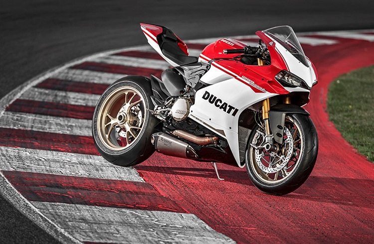
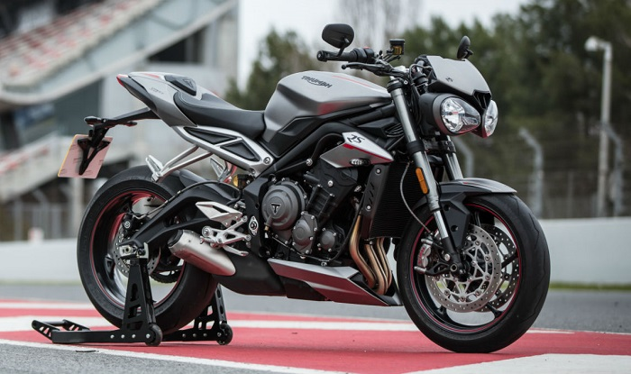
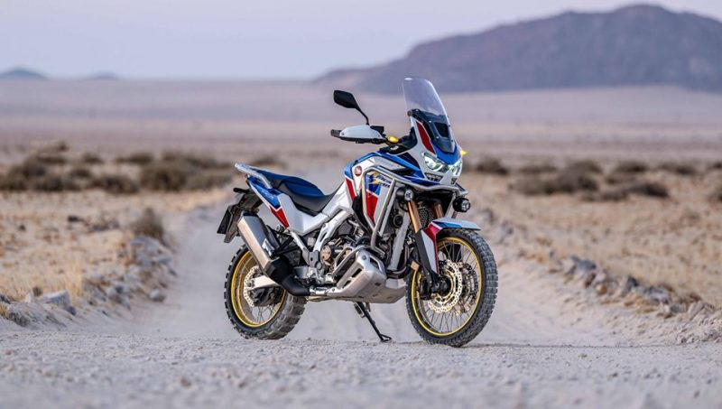
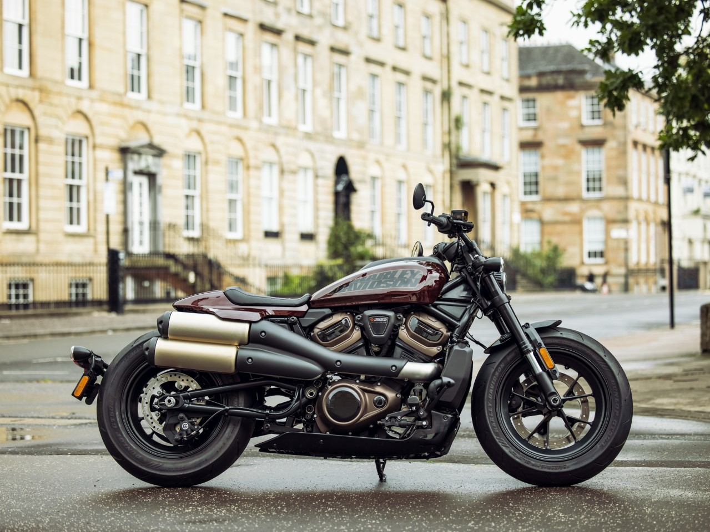
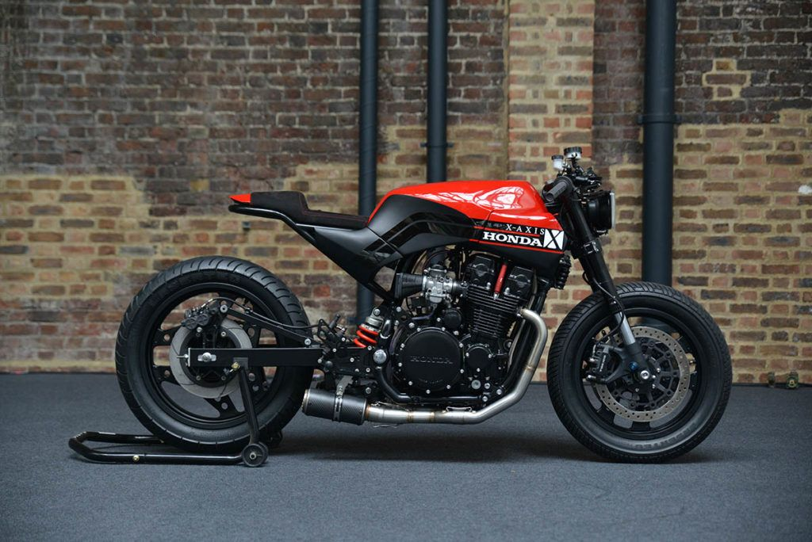

Motosiklet Türleri
- Süpersport 
- Naked 
- Enduro 
- Chopper 
- Cafe-Racer 
motosiklet ailesinin en hızlı üyelerinin de yer aldığı supersport motosiklet segmenti, yüksek hızlara kolayca çıkabilen ve bu hızlarını koruyabilen motosikletleri içerisinde barındırır. Genellikle “supersport motor”, “racing motor” “süper sport motor” gibi yanlış kullanımları olan supersport motosikletler, diğer motosikletlere göre daha hızlı yol alabilmelerinin yanı sıra çok daha güçlü fren sistemlerine de sahiptirler. Böylece yüksek süratlerde aniden durulması gerektiğinde kolayca yavaşlanabilmesini sağlarlar.
Genellikle bir supersport motosiklet gücüne ve viraj kabiliyetine sahip oldukça asi bu motosikletler supersportlardan farklı olarak adı üstünde çıplak üretilmekteler. Çıplaktan kastımız aslında şu, motosikletin üzerinde depo, far, akü kapağı gibi bir iki mecburi alan dışında neredeyse hiç grenaj (ki aslında ‘karenaj’dır) bulunmaz. Bu çıplaklık motosikleti daha asi bir delikanlı gibi gösterse de bir takım dezavantajlara da sebep oluyor elbet.
Son 20 yılda yaptığı patlamayla içeriği genişleyen ve şimdilerde yeni bir motosiklet tipine daha gebe bir tarz endurolar. Sürücüsünü her türlü yol koşulunda bir şekilde hedefe ulaştırmayı hedefler endurolar. Yerden oldukça yüksektirler. Beygir gücünden ziyade tork (dönme momenti) ön plandadır. Bunu kabaca son süratin yerine hızlanma ivmesinin daha çok önemsenmesi olarak niteleyebiliriz. Arazi şartlarında oldukça iyi işler çıkaran endurolardan sonra şimdi de yol endurosu kavramı yaygınlaşmış durumda. Yol enduroları ise touringlerin yapamadığı işleri yapmayı, gidemediği yolları gitmeyi hedefleyen ama uzun yola da uygun kuvvette her iki işi de biraz yapan modeller.
Bu kadar fazla isim olduğuna bakmayın her birinin farklı farklı anlamı var ancak bizim ülkemizde hepsine toptan chopper (çapır) demişler geçmişler. Bu tarzı aslında Amerikan filmlerinde gördüğünüz deri yelekli, dövmeli, çetevari amcalarla özdeşleştirdik senelerdir. Ancak işin iç yüzü hiç öyle değil. Amerika da kültür bu şekildedir belki ancak Türkiye’de bu tarz motora binen insanlar hiç de toplanıp birilerini falan kesmiyorlar (en azından şu an J). Önce Chopper – Cruiser – Custom farkından başlayalım isterseniz: Aslında bu motosikletlerin çok büyük bir çoğunluğu fabrikadan çıktığı halleriyle yollarımızda bulunuyor ve bu şekilde seri üretim motosikletlerin gerçek adları aslında Cruiser. Custom olarak tabir edilen motosikletlerse cruiser motosikletlerin sürücü tarafından kendisine uygun biçimde eklemeler, çıkarmalar, değişiklikler yapılmış hali. En çok ismini duyduğumuz chopper motosikletler ise isminin aksine sokaklarda en az gördüklerimizden. Chopper yapım aşamasından itibaren sürücüsüne göre şekillendirilen ve dünyada bir başka eşi olmayan motosikletlerdir. Ki ismi de İngilizcede kesme – biçme anlamına gelen ‘chopping’ kelimesinden gelir.
kökeni özellikle 1960'lı yıllarda, savaşın yorgunluklarından kurtulmuş, başta ingiliz olmak üzere avrupa'lı gençler arasında yükselişe geçen rockers akımına dayanır. rocker'lar rock'n roll karşıt kültürüne gönül vermiş genç ve başkaldıran elemanlardı hatırlarsanız. bu adamların avrupa'daki izdüşümleri, özellikle ingiltere'de 60'ların ortalarında londra etrafında yeni yeni tamamlanmaya başlayan taze asfaltın üzerinde yarışmaya başladılar. bu çocuklar hem görsel olarak kendilerine özgü, hem de hızlı makinelerini şehrin bir ucundaki kafedeki karşıt gruplarla boy ölçüştürmek, hem de sosyalleşmek için kullanırlardı. bir çete savaşından daha ziyade, kimin daha hızlı ve özgün motosikleti yapacağına dayalı bir rekabetleri vardı. bu yarışmalar genelde saatte 160 kilometre hıza (100 mil) ulaşmak üzerine kuruluydu, hıza ulaşılır ve bir sonraki kafeye gidilip sosyalleşilirdi. terimin cafe racer olması aslında buradan gelir. cafe racer motosikletlerin tipik konfigürasyonuna bakacak olursak, çizgileri 1960'ları hatırlatan naked motosiklet şasesi üzerine, genellikle monoposto olarak geliştirilmiş, rahatlıktan ziyade hız için yapılan modifikasyonları taşır. yani bir chopper gibi taşakları bacakları açarak kullanmak yerine, motosikletin gövdesine olabilecek en yakın sürüş stili kullanılır. düşük, birbirine oldukça yakın elcikler, tel jantlar, retro-görünüm, barlardan sarkan aynalar, sıfır karenaj, yüksek ses ve tork, rüzgardan korunmayan tasarım cafe racer motosikletlerin ortak yönleridir. günümüzde özellikle ducati monster, honda cb750, yamaha srx600, bmw r50 gibi modeller hurdalıklardan kurtarılarak cafe racer yapılmaktadır. cafe racer motosikletlerin modernize versiyonları ise streetfighter olarak anılmaktadır.